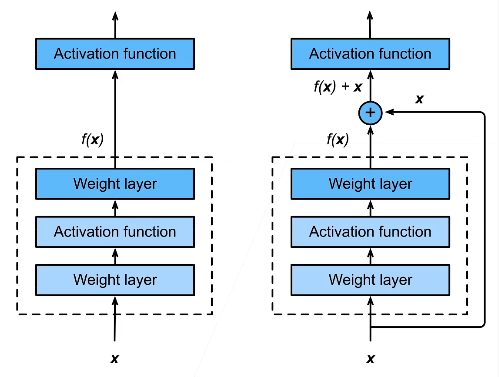
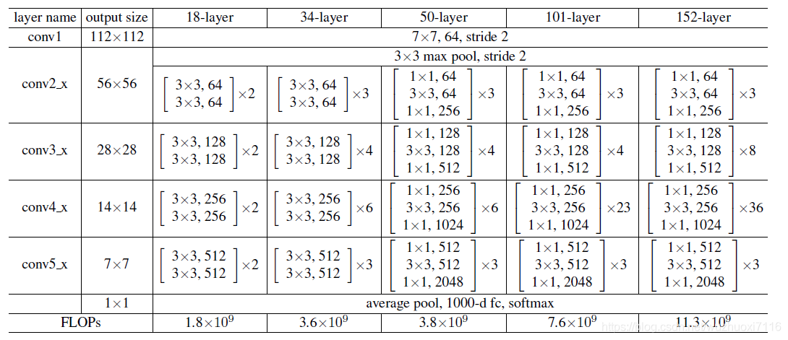
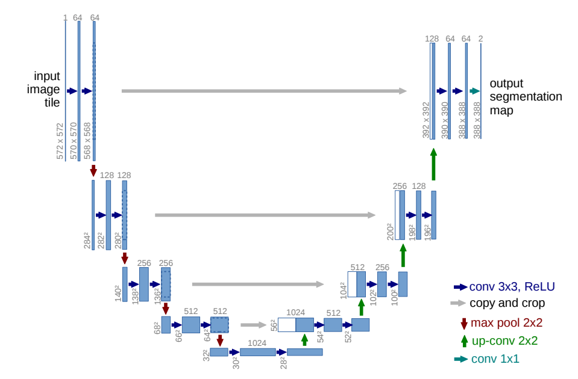

ResNet
加深神经网络不一定带来更好的结果。对于Non-nested function classes来说，由于学习偏差，更大的模型可能离最优点更远了。我们希望更大的模型严格包含小的模型，即nested function classes。ResNet的motivation就是想解决这个问题。
怎么做？
核心思想：加入一个残差块$f(x)=g(x)+x$，使得很深的网络更容易训练。

两种ResNet block
BasicBlock
#定义BasicBlock class BasicBlock(nn.Module): expansion = 1 def __init__(self, inplanes, planes, stride=1, downsaple=None, groups=1, base_width=64, dilation=1, norm_layer=None): super(BasicBlock, self).__init__() if norm_layer is None: norm_layer = nn.BatchNorm2d if groups !=1 or base_width != 64: raise ValueError('BasicBlock only supports groups=1 and base_width=64') if dilation > 1: raise NotImplementedError("Dilation > 1 not supported in BasicBlock") #下面定义BasicBlock中的各个层 self.conv1 = con3x3(inplanes, planes, stride) self.bn1 = norm_layer(planes) self.relu = nn.ReLU(inplace=True) #inplace为True表示进行原地操作，一般默认为False，表示新建一个变量存储操作 self.conv2 = con3x3(planes, planes) self.bn2 = norm_layer(planes) self.dowansample = downsaple self.stride = stride #定义前向传播函数将前面定义的各层连接起来 def forward(self, x): identity = x #这是由于残差块需要保留原始输入 out = self.conv1(x) out = self.bn1(out) out = self.relu(out) out = self.conv2(out) out = self.bn2(out) if self.dowansample is not None: #这是为了保证原始输入与卷积后的输出层叠加时维度相同 identity = self.dowansample(x) out += identity out = self.relu(out) return outBottleNeck
$1 \times 1$ Conv的作用是改变特征图的通道数，可以降低网络参数量，所以更深的网络会采用BottleNeck而不是BasicBlock。
#下面定义Bottleneck层（Resnet50以上用到的基础块） class Bottleneck(nn.Module): expansion = 4 #Bottleneck层输出通道都是输入的4倍 def __init__(self, inplanes, planes, stride=1, downnsaple=None, groups=1, base_width=64, dilation=1, norm_layer=None): super(Bottleneck, self).__init__() if norm_layer is None: norm_layer = nn.BatchNorm2d width = int(planes * (base_width / 64.)) * groups #定义Bottleneck中各层 self.conv1 = con1x1(inplanes, width) self.bn1 = norm_layer(width) self.conv2 = con3x3(width, width, stride, groups, dilation) self.bn2 = norm_layer(width) self.conv3 = con1x1(width, planes * self.expansion) self.bn3 = norm_layer(planes * self.expansion) self.relu = nn.ReLU(inplanes=True) self.downsaple = downnsaple self.stride = stride #定义Bottleneck的前向传播 def forward(self, x): identity = x out = self.conv1(x) out = self.bn1(out) out = self.relu(out) out = self.conv2(out) out = self.bn2(out) out = self.relu(out) out = self.conv3(out) out = self.bn3(out) out = self.relu(out) if self.downsaple is not None: identity = self.downsaple(x) out += identity out = self.relu(out) return out
ResNet架构：类似VGG和GoogleNet，但替换成ResNet block

UNet
